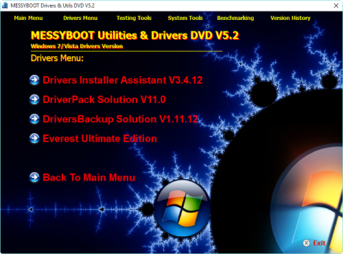

>MessyBoot 5.2 Windows Menus
Explore MessyBoot 5.2 Windows Menu Via the Interactive Demo:

Windows Drivers Menu
The Windows Drivers Menu contains two programs for installing drivers from the DriverPacks included on MessyBoot. There is also a program for backing-up drivers. Completing the drivers section is Everest Ultimate Edition, a full-featured system information tool for thos hard-to-find hardware IDs.
Click on the individual menu items on the image above, the menu will function in the same way as the real thing, giving you detailed explanations of each menu option.
Sub Menus
- Drivers Menu
- Testing Tools
- System Tools
- Benchmarking Tools
- What's New?
Support or Contact
Kev Messy: kevwag on GitHub
MessyBoot Email:messyboot@gmail.com